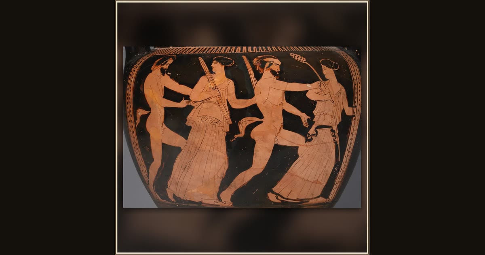

Red-Figure Column Krater (Mixing Vessel): Satyrs Pursuing Maenads
Attributed to Naples Painter (Greek, Attic) · 440–430 BCE · cma
Two satyrs pursue two maenads across a red-figure mixing vessel; the chorus names Satyrs joining the Bacchic dances (130) Explore its place in Euripides's Plays, Bacchae, line 135.